FindingIslam
FindingIslam aims to provide resources to help you learn/understand Islam, find all relevent links below.
Join the Daily LivesWatch the Dawah
The Clear Quran (English)
Order Free Quran
Guide for New Muslims
Islamic Books
Islamic Resources
The Inimitable Qur’an
Wife beating in Islam?
Apostasy in Islam
Moon Splitting in Islam?
Copyright © FindingIslam